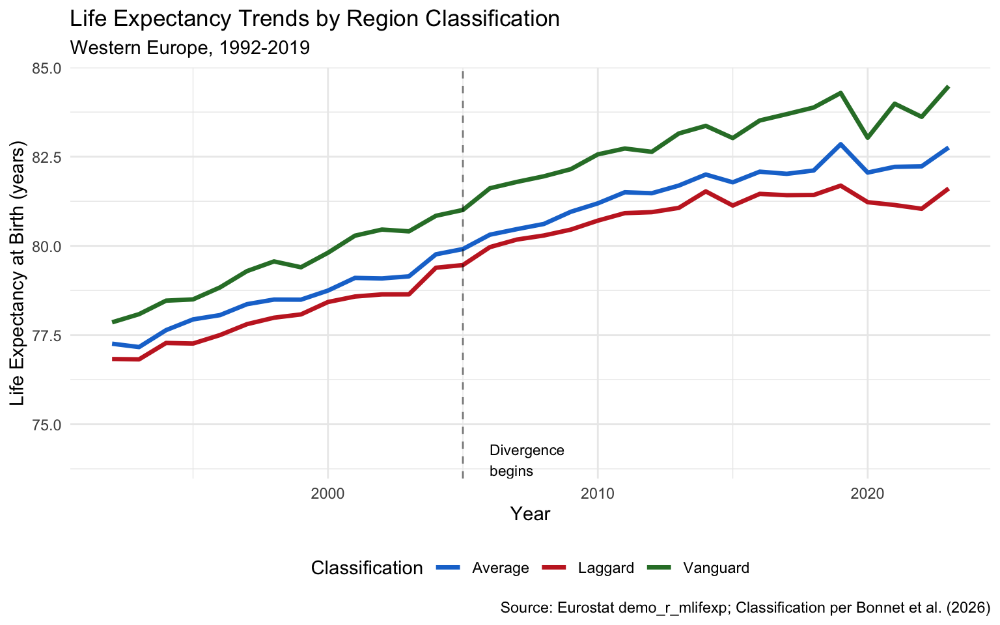

This vignette explores regional variation in life expectancy across Western Europe, based on research by Bonnet et al. (2026) published in Nature Communications.
Understanding the Data Structure
Each row represents aggregated population statistics for one region-year-sex combination, NOT individual survey responses.
| region_code | year | sex | life_expectancy | What this means |
|---|---|---|---|---|
| FR10 | 2019 | Male | 82.5 | Average LE for all males in Île-de-France in 2019 |
| FR10 | 2019 | Female | 87.1 | Average LE for all females in Île-de-France in 2019 |
| FR10 | 2019 | Total | 84.8 | Average LE for entire population of Île-de-France in 2019 |
The underlying Eurostat data represents ~400 million people across Western Europe. Life expectancy is calculated from official death registrations and census population counts—not a sample survey.
Row count formula: regions × years × 3 sex categories
- Sample data: 11 regions × 28 years × 3 = 924 rows
- Full dataset: 450 regions × 28 years × 3 = 37,800 rows
Key Finding: A Two-Tiered Europe
Since the mid-2000s, Western Europe has fragmented into: - Vanguard regions: Continued progress (~2.5 months/year gain for men) - Laggard regions: Stalled improvement (<0.5 months/year gain)
This divergence reversed decades of convergence observed in the 1990s.
The Microlives Gap
The ~7 year gap between vanguard and laggard regions translates to a substantial lifetime difference in microlives:
2.6 years LE gap = 45,496 lifetime microlives = 3.1 microlives/day
Interpretation: Living in a vanguard region vs a laggard region corresponds to ~3.1 microlives per day—roughly equivalent to the benefit of 30 minutes of daily exercise.
Regional Data Explorer
Data period: 2019 (pre-COVID baseline year, last year before pandemic distortions)
Column definitions:
| Column | Definition | Units |
|---|---|---|
region_name |
NUTS2 administrative region | — |
country_code |
ISO 2-letter country code | — |
life_expectancy |
Period life expectancy at birth | Years |
microlives_vs_eu_avg |
Daily microlives gained/lost vs EU average | Microlives/day |
classification |
Vanguard (top 20% + growing), Laggard (bottom 20% or stagnant), Average | — |
Key findings:
- Vanguard-laggard gap: ~7 years LE difference = ~8.4 microlives/day (equivalent to 30 min daily exercise)
- Gap trend: Widened from ~5 years (1992) to ~7 years (2019) as laggard regions stagnated post-2005
- Top region: Comunidad de Madrid (ES) at 86.1 years
- Bottom region: Mayotte (FR overseas) at 74.9 years
- Microlives interpretation: +1.0 microlives/day ≈ +30 min life expectancy/day ≈ +7.6 days/year
Trends Over Time
The divergence became pronounced after 2005:

Mortality Risk Multiplier
Use regional_mortality_multiplier() to adjust baseline micromort estimates by location:
Application: If the baseline risk for an activity is 10 micromorts, the location-adjusted risk in Paris would be approximately 10 × 0.93 = 9.3 micromorts (7% lower due to favorable regional factors).
Ecological Fallacy Warning
IMPORTANT: These regional statistics reflect population averages, not individual-level causation.
High life expectancy in “vanguard” regions results from multiple interacting factors:
| Factor | Mechanism |
|---|---|
| Healthcare access | Better hospitals, preventive care |
| Socioeconomic composition | Higher income, education levels |
| Selection effects | Healthy/wealthy people move to desirable regions |
| Historical factors | Long-term infrastructure investments |
| Cultural factors | Diet, social cohesion, lifestyle norms |
Moving to Switzerland will NOT automatically extend your life. The regional advantage reflects the aggregate characteristics of people who already live there.
Data Source
The regional classification methodology follows Bonnet et al. (2026):
Bonnet F, et al. “Potential and challenges for sustainable progress in human longevity.” Nature Communications 17, 996 (2026). doi:10.1038/s41467-026-68828-z
Raw data from Eurostat demo_r_mlifexp dataset. Interactive exploration available at the ReLoG_Europe tool.
Functions Reference
| Function | Purpose |
|---|---|
regional_life_expectancy() |
Full dataset with filters |
vanguard_regions() |
Top-performing regions only |
laggard_regions() |
Stagnating regions only |
regional_mortality_multiplier() |
Location-based risk adjustment |
Reproducibility
Show code
sessionInfo()
R version 4.5.2 (2025-10-31)
Platform: aarch64-apple-darwin24.6.0
Running under: macOS Tahoe 26.6.2
Matrix products: default
BLAS: /nix/store/gf17x1bj3m732n39jznn6kz69szbr5rb-blas-3/lib/libblas.dylib
LAPACK: /nix/store/5kg4z5bffhr8nry8bl8l5wlxvpy54dm2-openblas-0.3.30/lib/libopenblasp-r0.3.30.dylib; LAPACK version 3.12.0
locale:
[1] en_US.UTF-8/en_US.UTF-8/en_US.UTF-8/C/en_US.UTF-8/en_US.UTF-8
time zone: Europe/Belfast
tzcode source: internal
attached base packages:
[1] stats graphics grDevices utils datasets methods base
other attached packages:
[1] DT_0.34.0 targets_1.11.4
loaded via a namespace (and not attached):
[1] generics_0.1.4 sass_0.4.10 digest_0.6.39 magrittr_2.0.4
[5] RColorBrewer_1.1-3 evaluate_1.0.5 grid_4.5.2 fastmap_1.2.0
[9] rprojroot_2.1.1 jsonlite_2.0.0 processx_3.8.6 backports_1.5.0
[13] secretbase_1.0.5 ps_1.9.1 purrr_1.2.0 scales_1.4.0
[17] crosstalk_1.2.2 codetools_0.2-20 jquerylib_0.1.4 cli_3.6.5
[21] rlang_1.1.6 withr_3.0.2 cachem_1.1.0 yaml_2.3.12
[25] otel_0.2.0 tools_4.5.2 dplyr_1.1.4 ggplot2_4.0.1
[29] base64url_1.4 credentials_2.0.3 vctrs_0.6.5 R6_2.6.1
[33] lifecycle_1.0.4 fs_1.6.6 htmlwidgets_1.6.4 usethis_3.2.1
[37] pkgconfig_2.0.3 callr_3.7.6 pillar_1.11.1 bslib_0.9.0
[41] gtable_0.3.6 data.table_1.18.0 glue_1.8.0 gert_2.2.0
[45] xfun_0.55 tibble_3.3.0 tidyselect_1.2.1 sys_3.4.3
[49] knitr_1.51 farver_2.1.2 htmltools_0.5.9 igraph_2.2.1
[53] labeling_0.4.3 rmarkdown_2.30 compiler_4.5.2 prettyunits_1.2.0
[57] S7_0.2.1 askpass_1.2.1 openssl_2.3.4 micromort 0.1.0 | Git 94d93d2 | R 4.5.2 | Built 2026-04-18 12:20:56